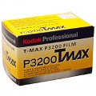

Kodak T-MAX P3200 黑白胶片
进的十个卷终于用完了，后面几个基本都是按400感光度拍的，TMAX-RS冲的，影调反差都十分不错了，但仍无法与HP5和TX400等相提并论，呵呵，，，，
速度，使用中体会到的唯一优点，，，，，
对冲洗要求太严格，个人实在难已控制，，，，，，，
20元/包进了10个过期2个月的，在室内弱光下可以用小光圈了，分别用3200、1600、800拍了几卷，显影液分别用的HC-110、X-TOLH和D76，从扫描效果来看，X-TOL冲的效果明显比D76、HC-110强。 速度够快，价格够贵。
高速度，用好的显影液颗粒也可接受，如果能将价格降下来，是使用很广泛的高速胶卷。
未过期的价格够贵的，只能买些过期的来玩，用D76或HC-110冲感觉暗部损失大、颗粒也大、整体显得不通透（或许与过期有关？），如靠减感来改善，就不如用TX400或HP5迫冲来得实在了。 要用好的显影液来伺候。